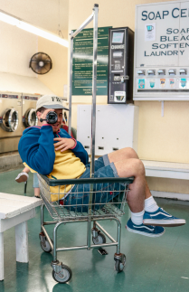
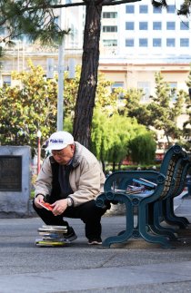

Soma Badri
I’m a third year Computer Science major at UC Santa Cruz. I’m currently a Research Assistant at the
Tech4Good Lab
, and the Assistive Technologies Lead Intern for ITS under the
Chancellor Internship Program
.